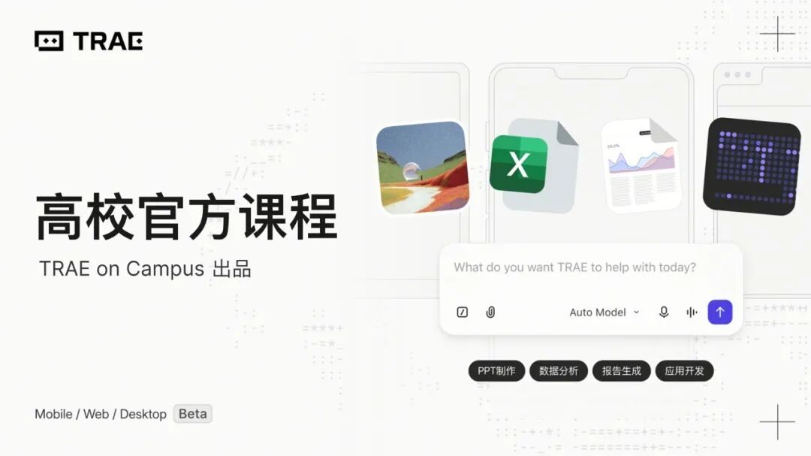
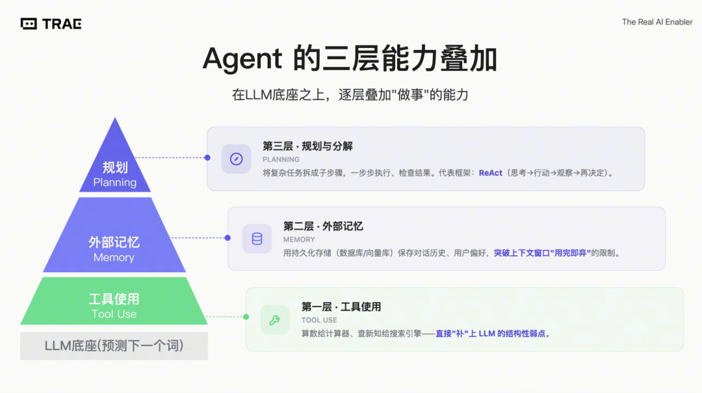
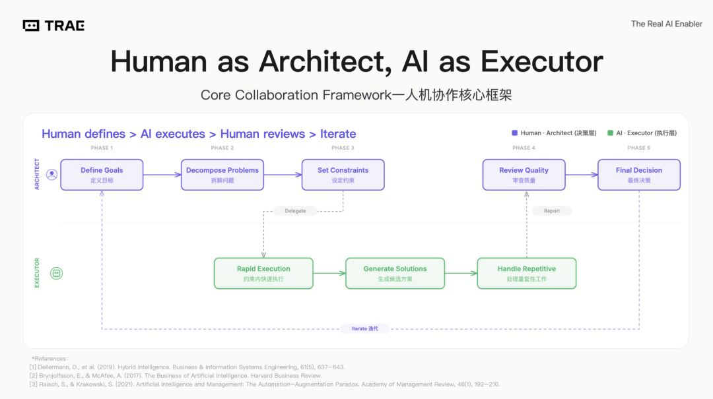
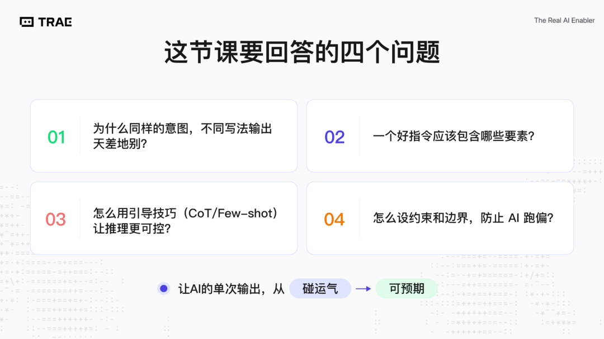
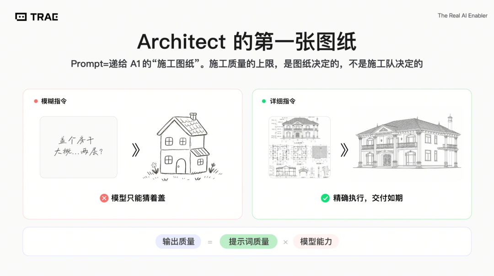
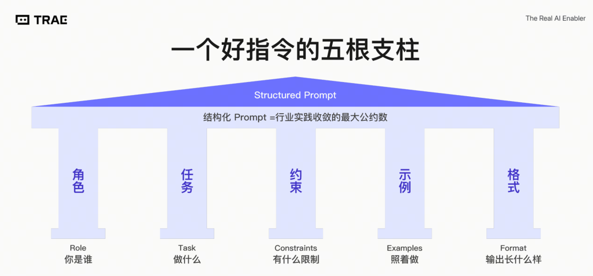
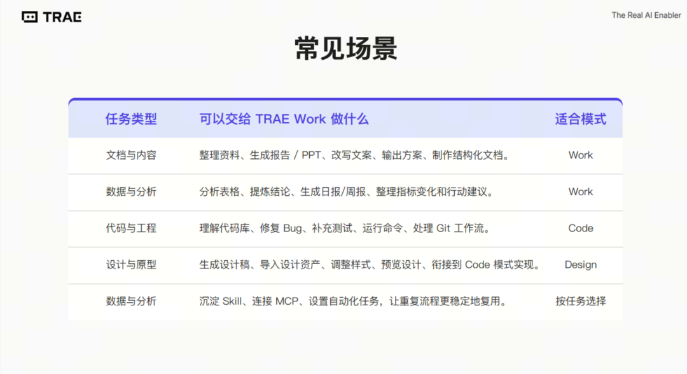
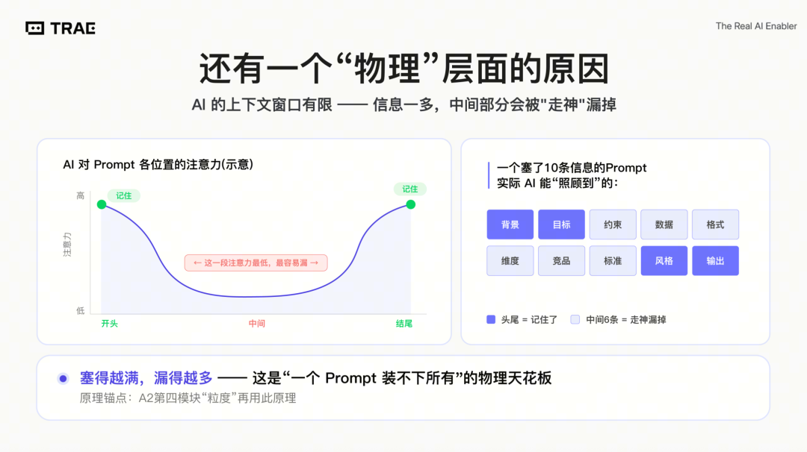
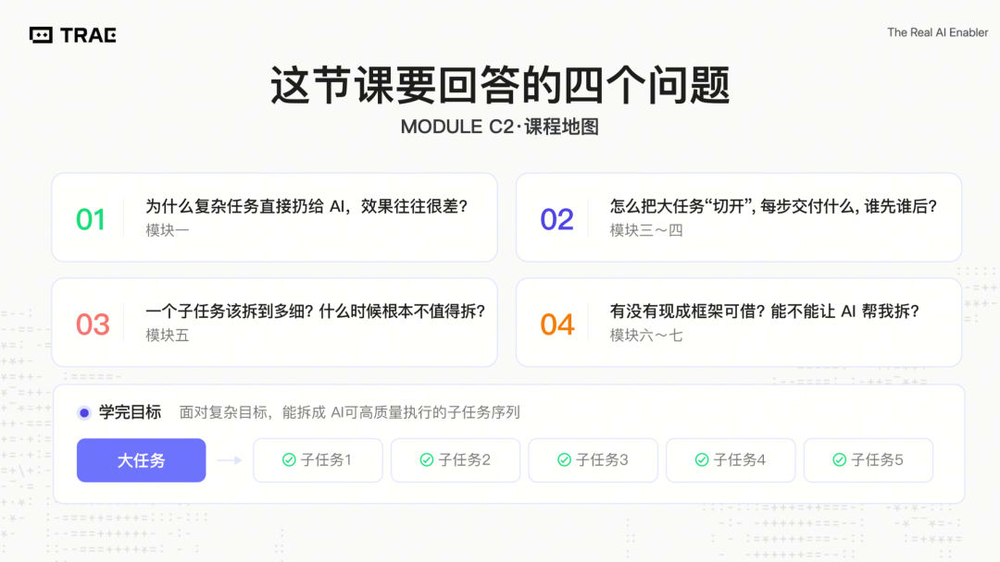
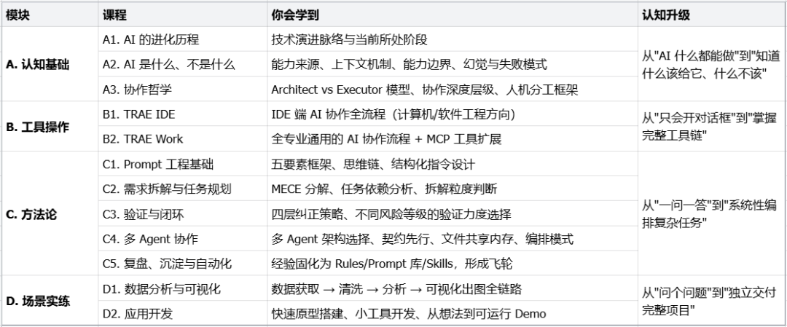

直接划到文章底部，点击【阅读原文】免费获取全部课件。
你是不是这样用 AI 的——
10 篇文献要读，丢给 AI "帮我总结"——结果关键结论漏了，因果关系还搞反了。
或者让它帮忙做个竞品分析，结果发现数据过时、逻辑混乱、结论全是正确的废话。
然后得出结论：AI 嘛，也就那样。
因为你用的是Chatbot——一个一问一答的聊天机器人。它的天花板，就是"单轮对话能做好的事"。
但问题是：你真正需要 AI 帮忙的事，没有一件是单轮能搞定的。
Chatbot 的天花板，你撞过吗？
想想你用 AI 最受挫的时刻：
❌ 做毕业设计——需求分析、方案设计、原型搭建……你让 AI "一口气"搞定，结果需求理解偏了、方案漏洞百出
❌ 做教学课件——定大纲、找案例、做PPT、配图表、写逐字稿……AI 做出来的东西，离能用的课件差十万八千里
❌ 做市场分析——数据、竞品、趋势、策略、可视化……一个 prompt 塞不下，塞下了也出不来好东西
❌ 做个小应用——需求、设计、前端、后端、测试……AI 顶多帮你写一段代码片段或做一个简陋原型
几乎所有真正有价值的任务，都不是"问一句答一句"能完成的。
这不是 AI 不行，是你用错了方式。
你需要的不是更好的 Chatbot，而是一种全新的协作方式
真正会用 AI 的人，不是在对话框里打更长的话。
他们是这样做的：
先把大目标拆成小任务
给每个任务定好约束和验收标准
让 AI 分步执行，每步都可审查
出了问题系统性纠错，而不是从头再来
最终把好用的流程沉淀下来，下次直接复用
"Human as Architect, AI as Executor"——你来当架构师，AI 来当执行者。
其实就是一套可学习的方法论。我们为此设计了一门 AI 通识课。
它不是教你"怎么跟 AI 聊天聊得更好"。它教的是——怎么把 AI 从一个聊天对象，变成一个帮你干活的执行团队。

这套课适合谁？所有专业都能用，不只是"程序员的事"：
学生——不管你是什么专业，想用 AI 提升学习和项目效率；不管你是学金融、学新闻、计算机、还是学设计。
教师——想把 AI 融入教学、快速产出高质量课件；或想用 AI 加速文献调研、数据处理和实验迭代。
以及所有对 AI 感兴趣、想真正用起来的人——不需要编程基础，只需要有"想让 AI 帮我做事"的意愿。
课程内容抢先看
AI 认知：为什么别人用 AI 提效翻倍，你却越用越累？
你让 AI 帮忙整理文档，结果发现它编造了三条不存在的引用；你让它改代码，改完一跑引入两个新 bug。于是你得出结论：AI 不靠谱。但你旁边同事，同一个模型，稳定接管了周报、代码审查、客户回复，效率翻倍。差距不在运气，在认知。
这三节课给你三个东西：判断 AI 能力边界、识别它会在哪翻车、以及一套"你管方向它管执行"的协作流程。先看第一个问题——
先分清两件事：LLM 只能聊天，说错了你不用就行；Agent 能动手——删文件、调接口、发邮件。说错没事，做错有事。而且做错一步，后面步步跟着错。所以第一个判断是：这个活儿，需不需要让 AI 动手？

Agent 比 LLM 多了三层本事：用工具（查数据、算数）、记东西（不会聊完就忘）、做规划（自己拆步骤干活）。但每层都带坑：工具会调错、记忆会记偏、规划会跑歪。能力越大，翻车方式越多。
最常见的翻车：Agent 很认真地做完了一整套——但做的不是你要的。任务一长，你最初说的目标就被后面的操作信息挤没了，它不知不觉就偏了方向。不是它偷懒，是它真的"忘了"你最开始要什么。那知道了这些坑，到底该怎么跟 AI 配合？

思路很简单：你当架构师，AI 当执行者。你负责定方向、拆步骤、设标准、验收结果；它负责在你画好的框里快速干活。有个经典案例：1997 年 Kasparov 输给 Deep Blue 后，开始倡导人机协作的理念，发现业余选手 + 普通电脑 + 好流程，能赢大师 + 超算 + 烂流程。决定效果的是流程，不是谁更强。
Prompt 工程：为什么你写的指令总"不灵"？
同样一句"帮我写个方案"，有人拿到的是能直接用的交付物，你拿到的是一堆正确的废话。你试过加"请认真写""请专业一点"——没用。问题不在 AI 不听话，在于你给的指令本身信息量不够。
这节课教你一件事：怎么写指令让 AI 的输出从"碰运气"变成"有把握"。不是背模板，是理解背后的逻辑——为什么有的写法有效、有的写法无效。

你的指令就是递给 AI 的"施工图纸"。图纸越模糊，它越只能猜；图纸越具体，它交付得越准。输出质量的上限，是你的指令决定的，不是模型决定的。那"具体"到底该具体到什么程度？有个很好用的判断标准——

把你写的指令拿给一个不了解背景的同事看，让他按字面意思执行。如果他会困惑，AI 也会困惑。这就是写 Prompt 的黄金法则。有个现成的结构——五根支柱：角色（你是谁）、任务（做什么）、约束（什么不能做）、示例（照着做）、格式（输出长什么样）。但重点来了——

这五个不是每次都要全写。简单任务用 1-2 根就够了，硬塞五根反而让输出变啰嗦。课程最重要的一课是教你判断：这个任务该用几根？什么时候该细、什么时候该粗？另外别指望一次写完美——好指令都是"写一版→试一下→再调一版"快速迭代出来的。
工具操作：从"会聊天"到"能干活"，你差一个趁手的工具
前面学的认知、Prompt、拆解，都是"脑子里的活"。但光想不练等于零——你得有一个环境把这些技能落地。很多人卡在这一步：知道 AI 能干什么，但打开工具界面一脸懵，不知道从哪开始。
B1 TRAE IDE（计算机/软件工程方向）——在 IDE 里直接跟 AI 结对编程：代码补全、对话式调试、Agent 模式自动改多文件。从"复制粘贴 ChatBot 代码"升级到"AI 在你的项目里实时干活"。
不写代码的朋友别慌，这不是程序员专属课。两条路径按你的专业二选一：
B2 TRAE Work（零基础通用）——不写代码也能用。对话式完成文档撰写、数据分析、方案生成。Work 模式自然语言交互，Design 模式做可视化，Code 模式帮你出网页和小工具。

这个模块学完，你会从"打开工具不知道干嘛"变成"上手就能出活"。写代码的朋友能让 AI 在你的项目里实时结对，像有个随叫随到的高级工程师坐你旁边；不写代码的朋友，能用一句话直接产出文档、分析报告、可视化原型——前面学的 Prompt 和拆解技能，在这里真正兑现成看得见的产出。
验证闭环：AI 写得头头是道——你确定它没在编？
你让 AI 帮你写一份报告，交给导师前瞄了一眼——格式整齐、逻辑通顺、引用充分。然后你自信满满地发了出去。结果对方追问了一句引用来源，你一查：那篇论文根本不存在，AI 从头到尾是编的——而且编得格外像真的。

背后有一个物理层面的硬限制：AI 的上下文窗口就像一个有限的工作台，信息塞得越满，中间部分越容易被「走神」漏掉。十条要求一次性灌进去，它实际能照顾到的可能只有开头和结尾——这不是态度问题，是机制决定的天花板。
学完这节课，你会从「祈祷 AI 没犯错」变成「我知道它哪里可能错、怎么抓住它、错了怎么纠回来」。在 AI 时代，敢为 AI 的输出负责——这是专业和业余之间最显眼的分界线。

课程从四个维度系统展开：为什么复杂任务一股脑扔给 AI 效果很差？问题不是 AI 不努力，而是这个任务对「一个 Prompt」来说太重了。怎么把大任务「切开」让每一步可验证？产物该验到什么粒度？有没有现成框架让 AI 帮你拆？——四个问题回答完，你就建立了一套「防编」的基本功。
多 Agent 协作：一个 AI 搞不定的活，怎么让一群 AI 配合着干？
你让三个 AI 分头干活——一个写文案、一个做分析、一个查资料。各自干完了，你去汇总，发现：格式不统一、口径对不上、甚至互相矛盾。问题出在哪？它们之间根本“不通气”。
每个 AI 的记忆只在当前对话窗口里，窗口一关什么都没了。A 写了什么，B 完全不知道。这是多 Agent 协作最常踩的坑：不是 AI 不够聪明，是它们之间没有“共享记忆”。怎么解决？
答案朴素到你可能不信：用文件。A 把结果写进文件，B 去读这个文件——信息就跨越了两个隔绝的窗口。文件不会因为对话结束而消失，它是稳定的、持久的、谁都能读的。
但「随便写个文件」远远不够——课程教你一套规矩：各写独立文件不互相覆盖、命名约定就是契约的一部分、汇总环节由专门的 Agent 统一读取合并。
除了“怎么传话”，课程还回答三个关键判断题：什么任务值得上多 Agent（不是越多越好）、三种 Agent 组队架构怎么选（各干各的 vs 拉群协作 vs 临时组队）、以及怎么用“契约先行”避免各干各的最后拼不到一起。从“指挥一个 AI”升级到“管一支 AI 团队”——这是协作能力的规模化跳跃。
复盘、沉淀与自动化：这周调好的东西，下周又得从头来？
上周，你花了快一个小时，反复调试、追问、纠正，终于让 AI 按你想要的方式产出了一份东西。你很满意，关掉了对话。这周同样的任务又来了——你打开新对话，发现 AI 仿佛从没见过你，上周那些费力纠正过的毛病，一个不落地又犯了一遍。每一次"从头再来"，都是在浪费已经付出过的努力。
这节课要解决的就是这个问题：怎么让你和 AI 协作的经验，不是每次都"清零"，而是像滚雪球一样越积越多、越用越快？答案是一套从沉淀到自动化的完整方法。
课程教你一套"四级台阶"的沉淀体系：从最简单的 Rules（写一条规则永久防踩坑），到Skills（把验证过的流程一键复用），到Custom Agents（养一个不用每次重设的专属助手），最高到Plugin（打包成可分享的能力礼包）。
通用场景实练：学了一堆方法，带你真上手
真正面对一个完整任务时，大多数人卡在同一个地方：道理都懂，但全流程自己走一遍就懵了——不知道从哪一步开始、哪一步该停下来检查、哪一步可以放手让 AI 跑。
这门课就是「正式比赛」。结合真实场景、真实数据——你自己决定怎么拆、怎么验、什么时候该追问。前面学的所有方法不会有人提醒你用，你得自己想到。
场景一：数据分析与可视化——从「我有一个问题想回答」出发，用 AI 走完数据获取→清洗→分析→可视化→得出结论的全链路，最终交出一份有图表、有结论、经过验证的分析报告。全程自然语言驱动，甚至不需要会写代码。
场景二：应用开发——从脑子里一个模糊想法开始，到最后做出一个能跑、能用、能展示给同学的应用 demo。你一个人 + AI 就能扮演产品经理、设计师、工程师、测试员的全部角色。你会体验到 Vibe Coding 的颠覆——以前一个 5-10 人团队花几周做的事，现在你一个人用自然语言就能搞定。
这两节课结束后，你会从「我知道怎么和 AI 协作」变成「我亲手用 AI 做出了完整的东西」。方法论不再是纸上谈兵，而是肌肉记忆。
完整课程地图
建立"理解 AI → 使用 AI → 与 AI 协作"的完整认知链路。

如果你是学生——学完这套课，你能从"问 AI 一句、得一句"升级到"系统性地用 AI 完成完整项目"。看懂能力边界、上手 TRAE、写好 Prompt、拆解任务、验证输出、编排多 Agent、把经验沉淀复用。最后在数据分析和应用开发里练成肌肉记忆。不教具体技术，教 AI 时代人人该有的底层能力。
如果你是老师——每节课配齐 PPT、逐字稿和 Demo 素材，拿来就能讲。想做 AI 教学但被备课成本劝退？直接以这套材料为起点，结合专业案例裁剪即可。我们备好框架和工具，把"判断方向、把控质量"留给老师——让"想开课"到"能开课"的门槛降到最低。
这门 AI 通识课，希望能帮助到每一位想让 AI 真正为自己所用的人——少走弯路，把时间花在更有价值的事情上。
点击阅读原文，全部课件免费获取